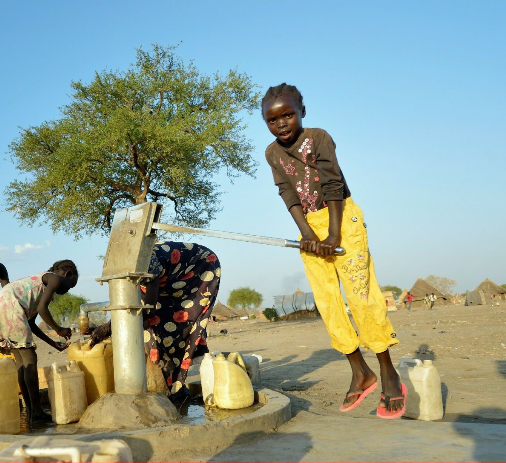
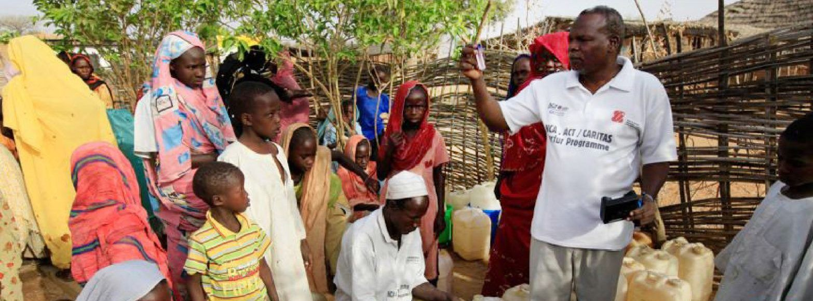
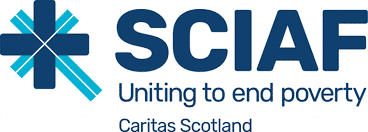

Notre mission
Actes 1:8« Témoigner de l'amour de Dieu »
À travers des œuvres de charité et de justice, en vue d'assurer le développement humain intégral, avec une attention prioritaire aux pauvres et aux plus démunis.
Membre de la confédération Caritas Internationalis
Caritas Africa est le ministère de la pastorale sociale de l'Église catholique en Afrique : un réseau de 46 Caritas nationales au service des pauvres et des plus exclus.

Caritas Africa est formellement liée à l'Église catholique en tant que ministère de la pastorale sociale en Afrique. Elle a été officiellement constituée le 20 janvier 1995 à Matola, au Mozambique, après l'approbation de ses premiers statuts par les Caritas nationales.
Elle anime, coordonne, représente et renforce ses 46 organisations membres, pour que chaque Caritas nationale serve au mieux les plus pauvres de son pays.
Qui sommes-nousAider l'Église en Afrique à exercer son ministère socio-pastoral de charité et de justice : aider les plus pauvres, répondre aux urgences humanitaires, promouvoir le développement humain intégral.
Soutenir les Caritas membres dans leur mission de charité et de justice sociale, et faciliter la coordination et la synergie de leurs actions.
Favoriser la collaboration et la coopération par l'animation, la coordination, la représentation, le plaidoyer, le développement institutionnel et le renforcement des capacités.
Actes 1:8« Témoigner de l'amour de Dieu »
À travers des œuvres de charité et de justice, en vue d'assurer le développement humain intégral, avec une attention prioritaire aux pauvres et aux plus démunis.
Jean 10:10« La vie en plénitude pour tous »
Des communautés épanouies en Afrique, où l'amour, la réconciliation, la justice, la paix et la prospérité prévalent pour tous, et où la dignité de chaque femme, homme et enfant est promue.

Inspirés par l'Évangile, nous travaillons dans un esprit de communion, de coopération fraternelle et de partenariat pour une Afrique meilleure.
Six zones, qui portent le nom des conférences épiscopales régionales, organisent la coordination entre les membres. Chacune est coordonnée par une Caritas nationale.
Nos rapports annuels depuis 2011, notre cadre stratégique et les réflexions du réseau, en français, anglais et portugais.
Rejoignez Caritas Africa dans son engagement en faveur de la justice et de la charité pour les plus défavorisés, aux côtés de 46 Caritas nationales.
Toute suspicion d'abus ou d'exploitation d'un enfant ou d'un adulte vulnérable impliquant le personnel ou les collaborateurs de Caritas doit être signalée. L'identité de la personne qui signale n'est divulguée qu'en cas de « besoin d'en connaître ».


